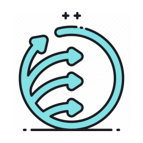

Seja Bem-vindo, meu nome é:
Vitor Firmino da Silva
Fullstack Developer Júnior and Bachelor in Computer Science.
Sou um Desenvolvedor Fullstack morando em São Paulo, Brasil. Atualmente desenvolvendo aplicativos web. Ativamente procurando um trabalho remoto.
Saiba MaisSobre
Ola, sou Bacharel e Ciência da Computação e Desenvolvedor Fullstack. Eu crio aplicativos e sites para web presando pela melhor experiência do usúario.
Venho aprimorando minhas habilidades em desenvolvimento de aplicações web. Gosto de aprender constantemente e melhorar minhas habilidades com as tecnologias que continuam evoluindo neste campo em constante mudança!
Tenho proficiência em
-
 Java - Criar aplicações completas e estruturas de backend.
Java - Criar aplicações completas e estruturas de backend.
-
 Javascript - Criar aplicações completas de baixa complexidade.
Javascript - Criar aplicações completas de baixa complexidade.
-
 Typescript - Criar aplicações completas.
Typescript - Criar aplicações completas.
-
 Python - Criar e analisar ferramentas computacionais aritméticas de baixa complexidade.
Python - Criar e analisar ferramentas computacionais aritméticas de baixa complexidade.
-
 PHP - Criar aplicações simples.
PHP - Criar aplicações simples.
- C - Criar e analisar ferramentas computacionais aritmética.
-
 Git - Versionar projetos pessoais e profissionais.
Git - Versionar projetos pessoais e profissionais.
-
 HTML - Estruturar o frontend de aplicações web/sites.
HTML - Estruturar o frontend de aplicações web/sites.
-
 CSS - Estilizar o frontend de aplicações web/sites.
CSS - Estilizar o frontend de aplicações web/sites.
-
 Angular - Aplicar o framework como ferramenta e agilizar o desenvovimento frontend de aplicações web/mobile.
Angular - Aplicar o framework como ferramenta e agilizar o desenvovimento frontend de aplicações web/mobile.
-
 React - Aplicar o framework frontend como ferramenta e agilizar o desenvovimento de aplicações web/sites.
React - Aplicar o framework frontend como ferramenta e agilizar o desenvovimento de aplicações web/sites.
-
 Spring Boot - Aplicar o framework backend Java como ferramenta e agilizar o desenvovimento de aplicações web.
Spring Boot - Aplicar o framework backend Java como ferramenta e agilizar o desenvovimento de aplicações web.
-
 Node.js - Aplicar a engine para agilizar o desenvovimento de aplicações web fullstack.
Node.js - Aplicar a engine para agilizar o desenvovimento de aplicações web fullstack.
-
 Mysql - Estruturar a lógica de agrupamento e armazenamento de dados, prezando pela disponibilizade e segurança.
Mysql - Estruturar a lógica de agrupamento e armazenamento de dados, prezando pela disponibilizade e segurança.
- PostgreSQL - Estruturar a lógica de agrupamento e armazenamento de dados, prezando pela disponibilizade e segurança.
-
 Linux - Utilizar da estrutura do sistema para manter serviços ativos e operantes.
Linux - Utilizar da estrutura do sistema para manter serviços ativos e operantes.
- Cascade - Utilizar a metodogia para planejar e desenvolver aplicações simples.
- Scrum - Utilizar a metodogia ágil para planejar e desenvolver aplicações complexas da melhor maneira possível.
-  Extreme Programming - Utilizar a metodogia ágil para planejar e desenvolver aplicações complexas de alta mutabilidade da melhor maneira possível.
- Portuguese - Linguagem materna.
- English - Técnico/Básico.
Projetos
Memory Game
Jogo da memoria, treino das habilidades basicas de estilização e programação em javascript.
Java Game Engine 2D
Um projeto feito em Java com o objetivo de estudo da manipulação de classes para construção de jogos 2D.
Acoplamento Java e Python para captação de padrões associativos
Mineração de regras de associação para reconhecimento de padrões através de um fluxo de dados.
Sistema Auxiliar de Transporte Escolar
Um projeto feito em Java utilizando JPA com o objetivo de criar um sistema auxiliar para transporte escolar (SATE). Este projeto foi feito para um trabalho da faculdade terceiro semestre em duplas.